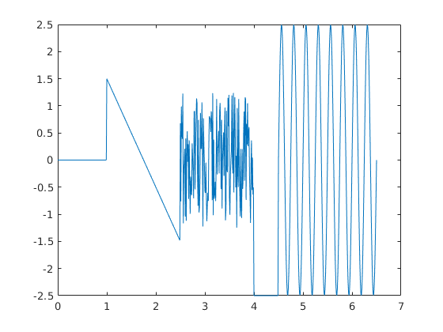

3.laboratorijas darbs
Contents
Gabalveida signāla montāža
Mērķi:
- Iemācīties izveidot atsevišķus funkcijas no signāla
- Iemācīties konstruēt funkcijas grafikus no signāla pa gabaliem
- Iemācīties apvienot visas atsevišķas funkcijas vienā signālu funkcijā
- Iemācīties veikt datu filtrāciju
- Iemācīties pārveidot skriptu par funkciju
Darba programma:
function y = lab_darbs_3(t)
if nargin == 0 t = 0:0.01:6.5; end t_sin_f = (t>=4.5)&(t<=6.5); t_sin = t(t_sin_f); t_zero_f = (t>=0)&(t<1); t_zero = t(t_zero_f); t_const_f = (t>=4)&(t<4.5); t_const = t(t_const_f); t_saw_f = (t>=1)&(t<2.5); t_saw = t(t_saw_f); t_noise_f = (t>=2.5)&(t<4); t_noise = t(t_noise_f); A0 = 0; A = 2.5; T = (6.5-4.5)/8; f = 1/T; delay = 4.5; y_sin = A0+A*sin(2*pi*f*(t_sin-delay)); y_zero = zeros(size(t_zero)); y_const=zeros(size(t_const))-2.5; y_noise = 2.5*rand(size(t_noise))-1.25; k = (1.5+1.5)/(1-2.5); delay = 1.75; y_saw = k*(t_saw-delay); t = [t_zero,t_saw,t_noise,t_const,t_sin]; y = [y_zero,y_saw,y_noise,y_const,y_sin]; if nargout == 0 plot(t,y) y = []; end
ans =
[]
 Secinājumi:
Secinājumā es iemācījos izveidot signālu funkciju, dalot signālu uz atsevišķiem gabaliem un apvienojot tos vienā signālu funkcija. Arī es iemācījos izmantot datu filtrāciju un pārveidot skriptu par funkciju. Visi darba mērķi ir sasniegti.